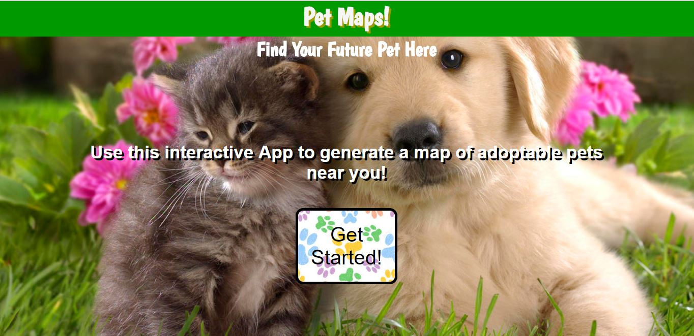

Hello! I'm Francia and I'm a determined frontend developer!
Welcome hobbyist, employer, or accidental visitor!
My name is Francia Moran and I am an avid web developer. Although I am relatively new to this field, over the past year, I have greatly expanded my knowledge of computer programming and web development. In particular, for the last six months I have been refining my coding skills and learning new languages through the Thinkful Full Stack Program. In the program, I learned more about HTML, CSS, and JavaScript as well as learned to use jQuery, Node.js, and React. In tandem with learning these new skills, I had the opportunity to demonstrate my skills with three capstone projects. I endeavored to select topics for these projects in line with my interests to both demonstrate my personality and character as well as show my understanding of the topics I had learned. In the end I feel I have produced exceptional projects which successfully convey learned knowledge while creating fun apps with great utility. I hope that this website and my projects spark interest in the reader to learn more about coding and hopefully learn more about me!
Email: franciam@berkeley.edu
Github: FranciaMoran
Number: (925)482-5973
Linkedin: Francia Moran
Projects
Musician Mashup
Musician Mashup is an app which utilizes React and Node to create a hub for musicians. I was inspired to create this project because I am myself a musician and I felt it would be useful to create an app specifically geared toward networking for those looking to make music with different people. With the Musician Mashup App the user can create a personal account, update profile information, create a personal band and search for other members in their area.
To make the Musician Mashup app possible I used:
React with the following libraries: react-redux, react-router-dom, redux-form and enzyme for integration testing. Node.js with the following frameworks and middleware: express, passport, body-parser and morgan. Integration testing for my node.js code and database calls were achieved with the use of faker, chai, and chai-http. To create my database I used MongoDB with the use of mongoose and mlab. Finally the designs and styles were accomplished with vanilla CSS.
A live version of this app can be viewed at:
The code for this app can be viewed at:
Calorie Counter
The Calorie Counter app encourages the user to track their consumption of calories including a variety of macros including carbohydrates, total fats, and protein to name a few. I was motivated to create this app because I have experienced the benefits of eating a more balanced diet and I wanted to make an easy straightforward way of doing so. With the Calorie Counter the user can create custom items to add to their daily intake, edit items, delete items and search a public api for nutritional information which they can also add to their logged food items.
To make the Calorie Counter app possible I used:
HTML, jQuery, JavaScript, Node.js, the nutritionix api, and MongoDB hosted on mlab. Again the designs and styles were accomplished with vanilla CSS.
A live version of this app can be viewed at:
The code for this app can be viewed at:
Pet Maps
The Pet Maps app utilizes the petfinder public api to deliver a useful app where animal lovers can search for adoptable pets near them. Additionally, the user also can view pets near them with google maps. Along with markers on the map for each animal, below the map are descriptions of pets and accompanying pictures. The user also has the option to modify search criteria. For example the user can select the animal size, age and gender to filter out animals best for them. I have always loved dogs so taking on this project with shelter animals as inspiration was very motivating!
To make the Pet Maps app possible I used:
HTML, CSS, JavaScript, jQuery, the petfinder api, and the google maps api
A live version of this app can be viewed at:
The code for this app can be viewed at: